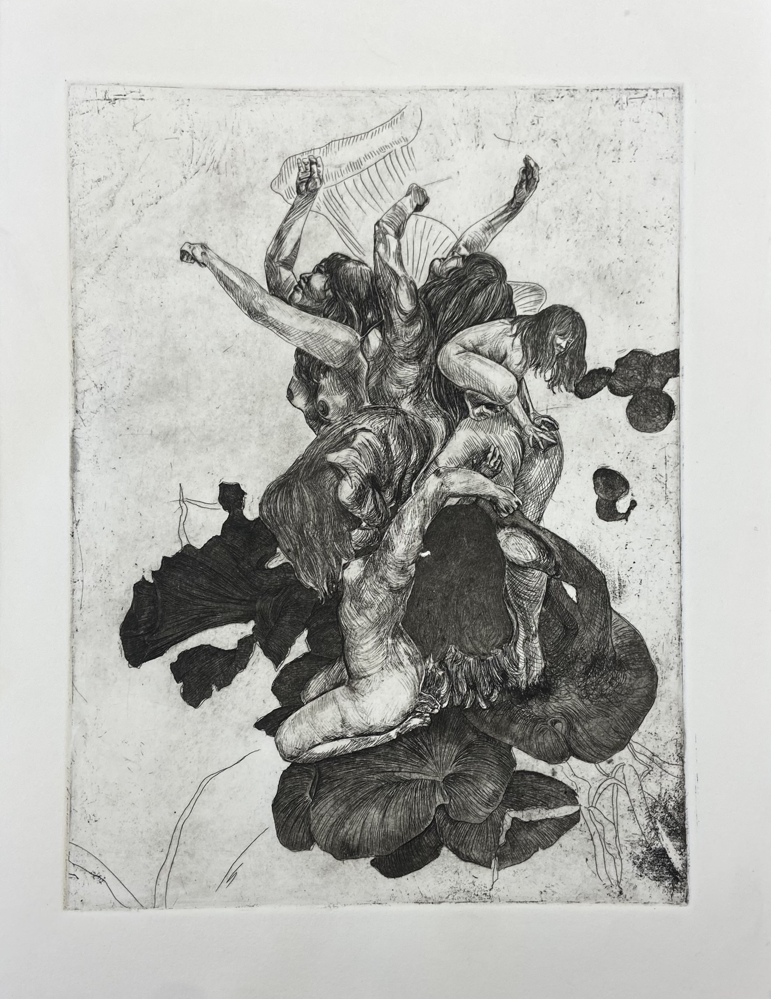
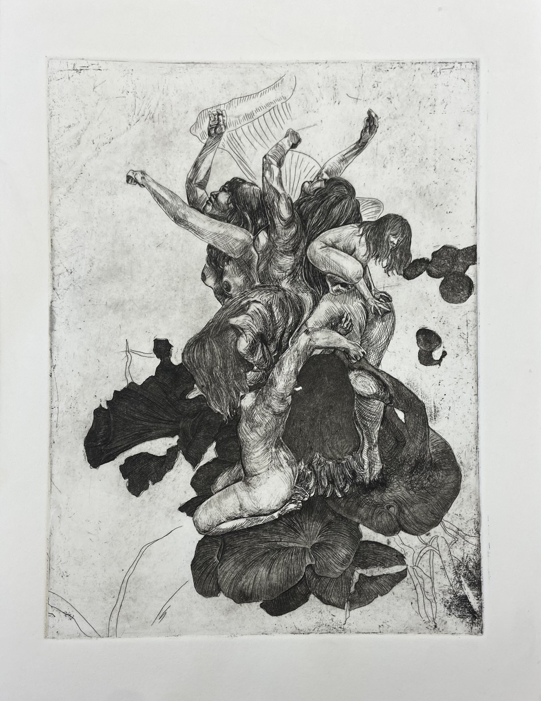
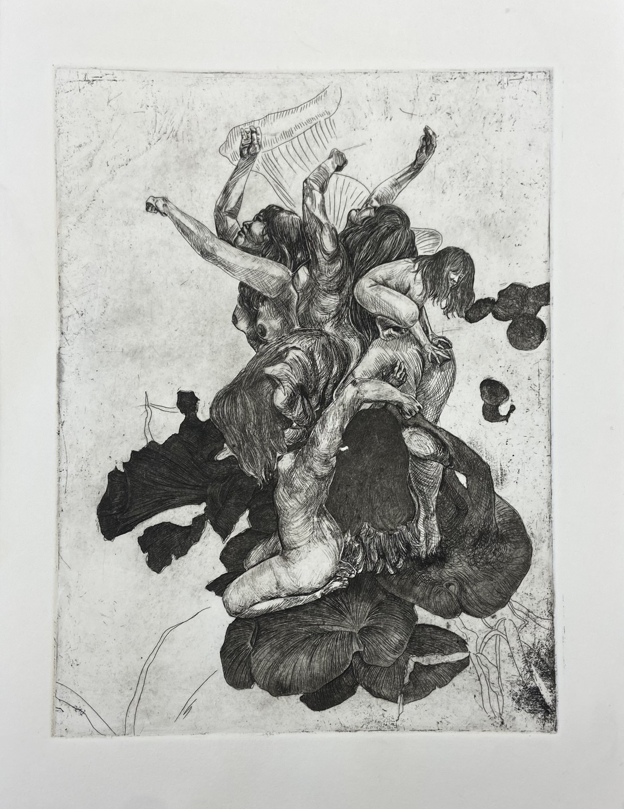
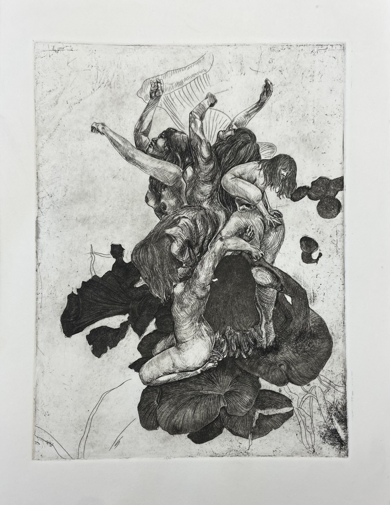

 

This print was introspective– witnessing the many births and deaths of iterations of myself in my adult life has been tragically beautiful: natural instances of rot & bloom, such as how beings as beautiful as mushrooms sustain themselves off of the dead.